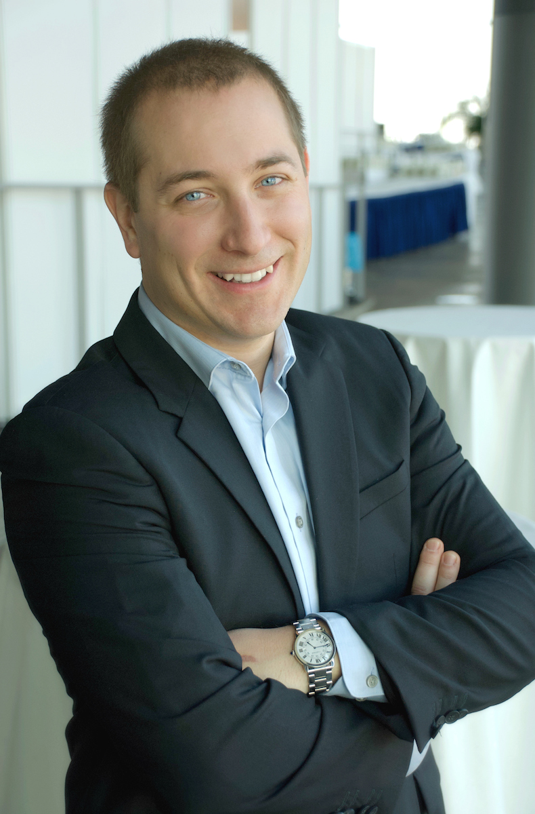
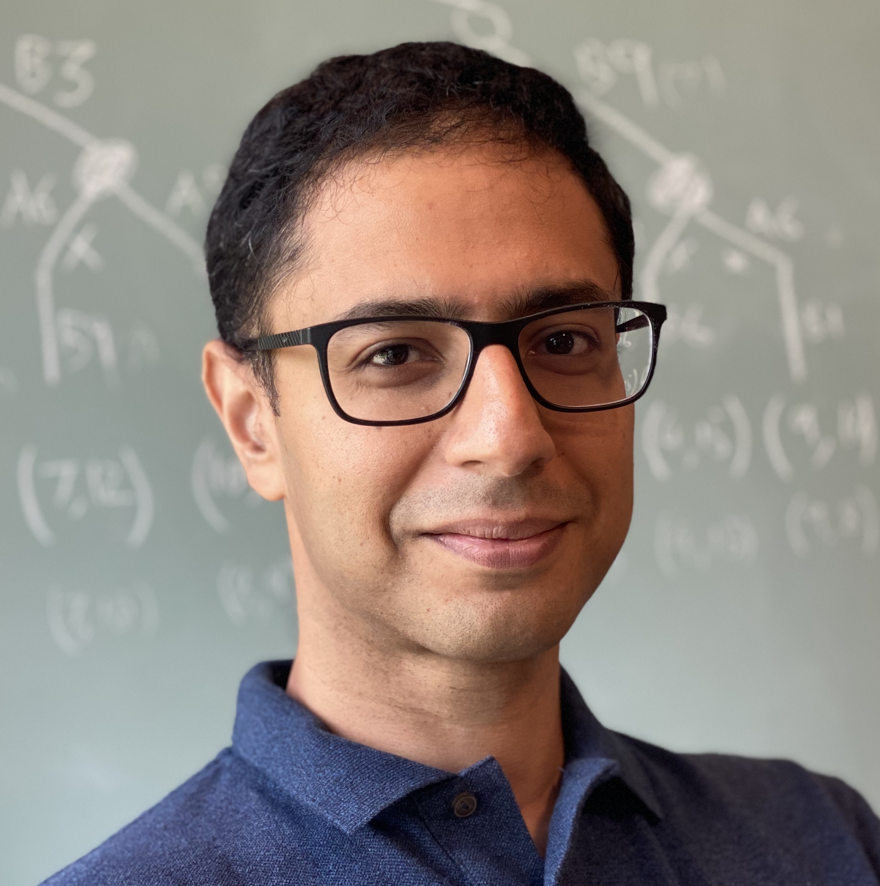
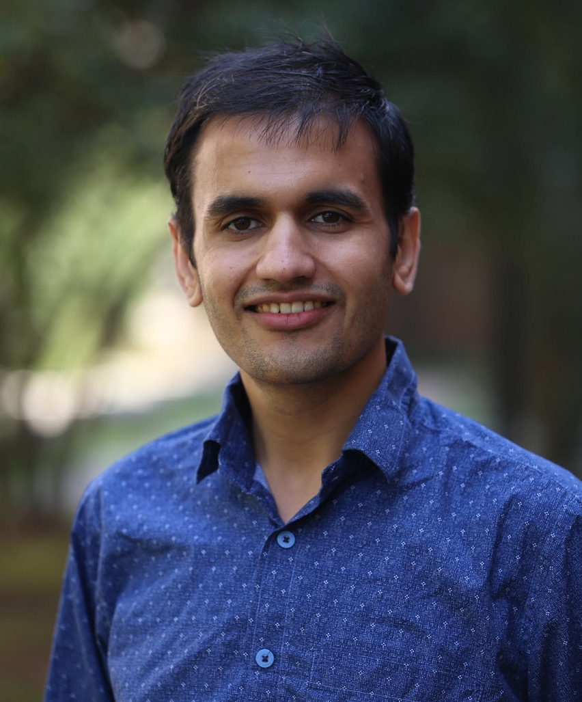

Logic Synthesis Software School
TBA · Virtual Experience · co-organized with IWLS
About the event
The Logic Synthesis Software School (LSSS) is an informal meeting on software tools for logic synthesis and verification. The goal of the meeting is to bring together researchers and tool developers in the fields of electronic design automation, logic synthesis, and verification to foster research on open science infrastructure and tools for logic synthesis and verification. LSSS is a joint event of IWLS.
Confirmed speakers:
- Bruno Schmitt, EPFL, CH
- Satrajit Chatterjee, Google, USA
- Pierre-Emmanuel Gaillardon, University of Utah, USA
- Kuldeep Meel, National University of Singapore, SG
Program
| TBA |
Welcome |
| TBA |
The EPFL Flagship Libraries in Action: A Development Snapshot of mockturtle & tweedledum (Heinz Riener & Bruno Schmitt)
|
| TBA | QüA Break |
| TBA |
Under the Hood of LSOracle (Pierre-Emmanuel Gaillardon) In this talk, we will introduce our recent effort in developing a logic synthesis platform, named LSOracle, whose goal is to achieve/approach global optimality by partitioning and classifying portions of a complete logic design, in order to apply ad-hoc logic optimizations (MIGs and other). Indeed, in spite of relying on a single data structure and class of heuristics (like ABC), LSOracle is capable of representing and optimizing logic using several Boolean representations (AIGs, MIGs, XMGs) and manipulate independent partitions back and force between those representations to select the best Power-Performance-Area (PPA) improvements per partition. The structure of LSOracle also lends itself naturally to massively parallel optimization and cloud-based deployments. Pierre-Emmanuel Gaillardon is an associate professor in the Electrical and Computer Engineering (ECE) department and an adjunct assistant professor in the School of Computing at The University of Utah, Salt Lake City, UT, where he leads the Laboratory for NanoIntegrated Systems (LNIS). He holds an Electrical Engineer degree from CPE-Lyon, France (2008), a M.Sc. degree in Electrical Engineering from INSA Lyon, France (2008) and a Ph.D. degree in Electrical Engineering from CEA-LETI, Grenoble, France and the University of Lyon, France (2011). Prior to joining the University of Utah, he was a research associate at the Swiss Federal Institute of Technology (EPFL), Lausanne, Switzerland within the Laboratory of Integrated Systems (Prof. De Micheli) and a visiting research associate at Stanford University, Palo Alto, CA, USA. Previously, he was research assistant at CEA-LETI, Grenoble, France. Prof. Gaillardon is recipient of the C-Innov 2011 best thesis award, the Nanoarch 2012 best paper award, the BSF 2017 Prof. Pazy Memorial Research Award, the 2017 NSF CAREER award, the 2018 IEEE CEDA Pederson Award, the 2018 ChemE Education William H. Corcoran best paper award, the 2019 DARPA Young Faculty Award, the 2019 IEEE CEDA Ernest S. Kuh Early Career Award and the 2020 ACM SIGDA Outstanding New Faculty Award. He has been serving as TPC member for many conferences, including DATE, DAC, ICCAD, Nanoarch, etc. He is an associate editor of IEEE TNANO and a reviewer for several journals and funding agencies. He served as Topic co-chair "Emerging Technologies for Future Memories" for DATE'17-19. He is a senior member of the IEEE. The research activities and interests of Prof. Gaillardon are currently focused on the development of novel computing systems exploiting emerging device technologies and novel EDA techniques. |
| TBA | QüA Break |
| TBA |
Using Logic to Understand Learning (Satrajit Chatterjee) TBA  |
| TBA | QüA Break |
| TBA |
Scalable Functional Synthesis: The Child of Perfect Marriage between Machine Learning and Formal Methods (Kuldeep Meel) Don't we all dream of the perfect assistant whom we can just tell what to do, and the assistant can figure out how to accomplish the tasks? Formally, given a specification F(X, Y) over the set of input variables X and output variables Y, we want the assistant, aka functional synthesis engine, to design a function G such that (X, Y=G(X)) satisfies F. Functional synthesis has been studied for over 150 years, dating back Boole in 1850s and yet scalability remains a core challenge. Motivated by progress in machine learning, we design a new algorithmic framework Manthan, which views functional synthesis as a classification problem, relying on advances in constrained sampling for data generation, and advances in automated reasoning for a novel proof-guided refinement and provable verification. On an extensive and rigorous evaluation over 609 benchmarks, we demonstrate that Manthan significantly improves upon the current state of the art. The significant performance improvements, along with our detailed analysis, highlights several interesting avenues of future work at the intersection of machine learning, constrained sampling, and automated reasoning. Kuldeep Meel is the Sung Kah Kay Assistant Professor in the Computer Science Department of School of Computing at the National University of Singapore where he also holds President's Young Professorship. His research interests lie at the intersection of Formal Methods and Artificial Intelligence. He is a recipient of the 2019 NRF Fellowship for AI and was named AI’s 10 to Watch by IEEE Intelligent Systems in 2020. His work received the 2018 Ralph Budd Award for Best PhD Thesis in Engineering, 2014 Outstanding Masters Thesis Award from Vienna Center of Logic and Algorithms and Best Student Paper Award at CP 2015. He received his Ph.D. (2017) and M.S. (2014) degree from Rice University, and B. Tech. (with Honors) degree (2012) in Computer Science and Engineering from Indian Institute of Technology, Bombay. |

Organizers
- Heinz Riener, EPFL, Switzerland
- Giovanni De Micheli, EPFL, Switzerland
Links to Previous Events
LSSS 2019: June 20, 2019, Lausanne, Switzerland